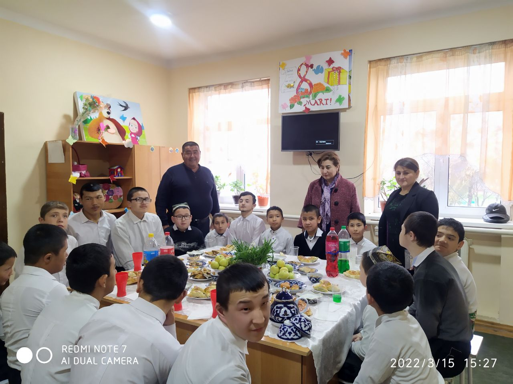
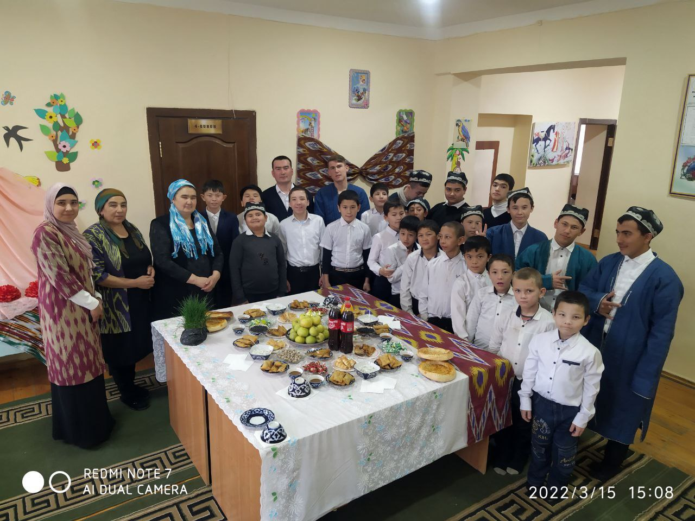
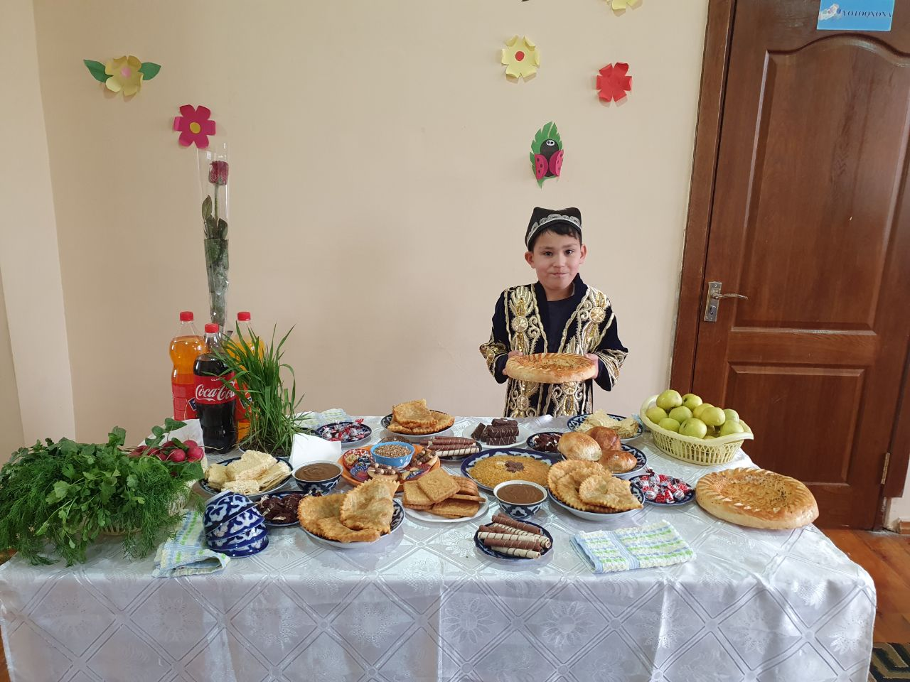
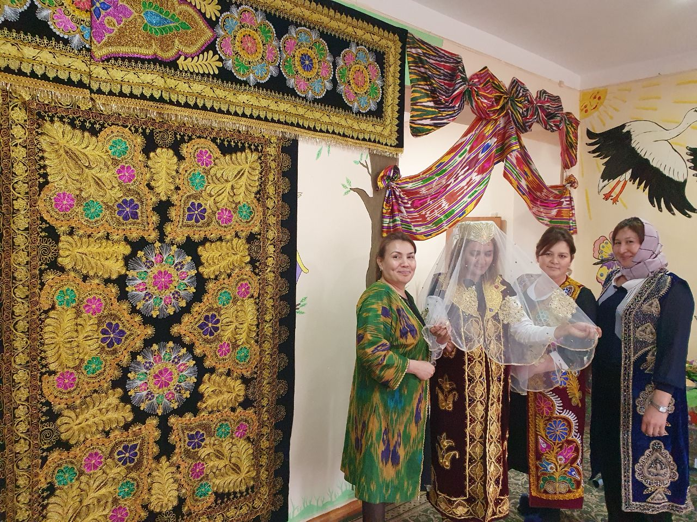
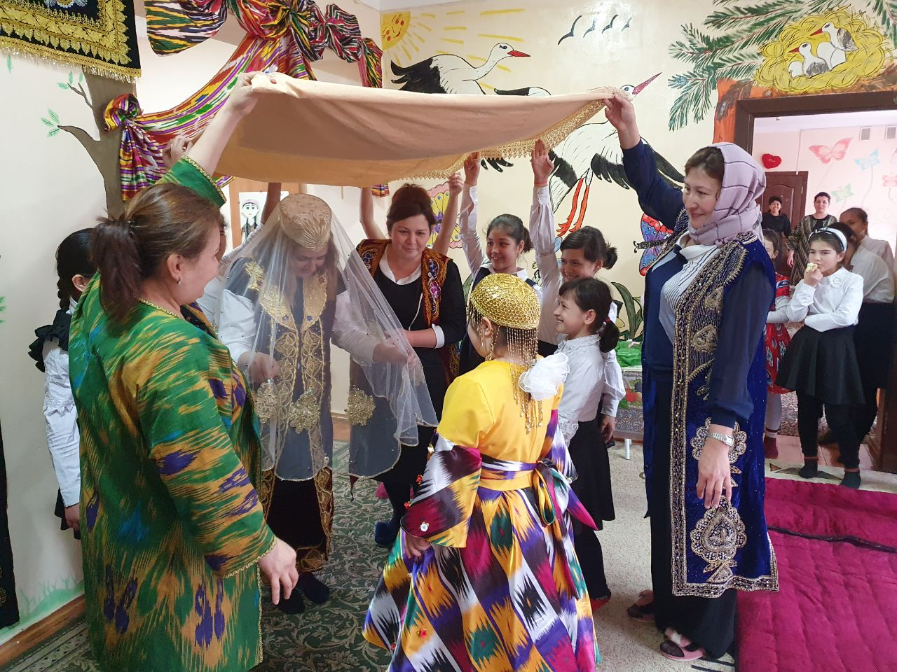
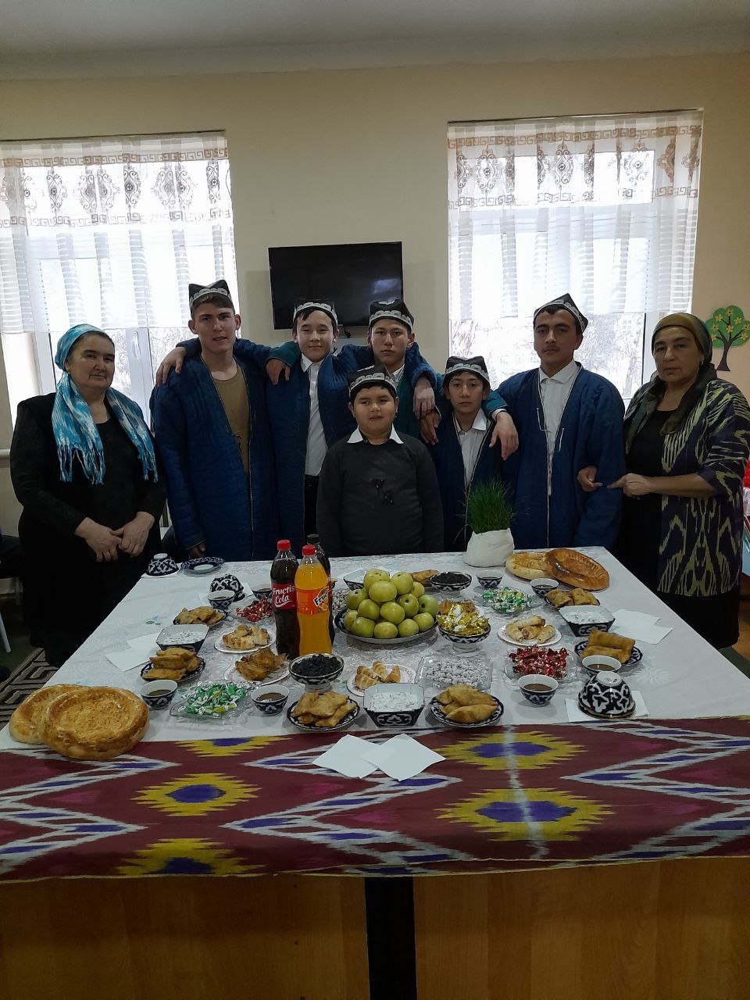

Tadbir
Hush kelding Navro`zim
“Hush kelding Navro`zim” shiori ostida maktab-internati hududida obodonlashtirish va
ko`kalamzorlashtirish ishlari keng ko`lamda olib borildi. Guruh maydonchalariga mevali manzarali 200 ta, 100
ta manzarali mavsumiy gul ko`chatlari ekildi. Issiqxonalarda karam, gulkaram, bulg`or qalampiri ko`katlar
oshxona uchun yetishtirilmoqda.
Daraxtlarga shakl berib oqlandi. “Hashar elga yarashar” shiori ostida xodimlar ishtirokida shanbalikar
o`kazildi. Sinf va guruhlarda ma`naviyat soatlari va tarbiyaviy soatlarda “O`lkamda Navro`z” shiori ostida
davra suhbatlari o`tkazildi.
Suhbatlarda milliy an`analar qadriyatlar o`quvchilar ongiga singdirib borildi. Yakka tartibda ta`lim
olayotgan o`quvchilar do`stlaridan xabar oishdi, ko`p yillar mehnat qilgan qarilik gashtini surayotgan ustoz
murabbiylar xonadonlariga tashrif buyurildi. Xomiylar tomonidan hayriya sumalagi tashkil etildi va bayram
dasturxoni tuzaldi. Sumalak pishirish marosimida qizlar faol ishtirok etishdi. Bug`doy donini maxsus
idishlarda qulay iqlim sharoitida undirishdi. Bunday bayramlar jamoani jiplashtirishga ahillika undab bordi.
Har bir guruh “Navro`z-yangi yil yangi hayot” shiori ostida bayram dasturxonlari tuzaldi.
Navro`z-bayram haftaligi oyligida ommaviy bayram o`yinlari chillak, qo`g`irchoq o`yin, tosh, lapar, ip
o`yinlari o`tkazildi.
Turli tuman xalq o`yinlari bahor qo`shiqlari ijro etildi. Kitobxonliklar turli jismoniy tarbiya
sovrinli o`yinlar musobaqalar tashkil etildi. Ijodiy kecha tashkil etildi. Uning asarlaridagi sodadil
mehnatkash hislatlari aks etgan qahramonlari haqida o`quvchilar ijodkor bilan fikr almashdilar. Asar
qahramonlari tarbiyalanuvchilarimizni rostgo`ylikka do`stlarni qadrlashga kattalarni hurmat qilishga
chaqiradi. Tumanimizdagi mingtepa qadimiy tarixiy manziliga sayohat uyushtirildi. Mingtepa xarobalari
zardushtiylik dini davrida yashagan ajdodlarimiz ekanligi tarixchilar tomonidan isbotlangan sayohat davomida
tarbiyalanuvchilar ajdodlarimiz quyoshni, suvni, olovni, muqaddas bilganliklarini Navro`z eng qadimiy bayram
ekanini bilib olishdi.
Barcha qadriyatlarimiz urf-odat an`nalrimiz kabi Navro`z ham qayta tug`ilib zamonaviy milliy
udumlarimiz bilan boyib bormoqda. Navro`z tabiatning ozidan tabiiy ravishda kelib chiqqan uyg`onish
yangilanish bayramidir.
Bizning Galleriya
- 
- 
- 
- 
- 
- 